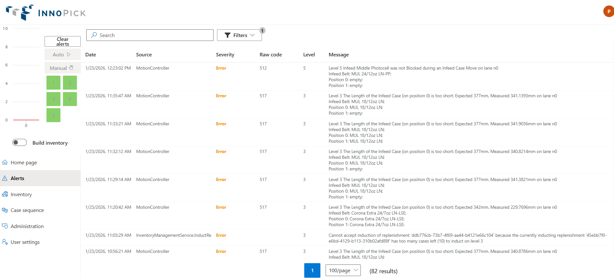
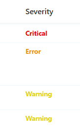
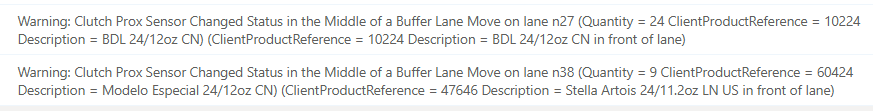
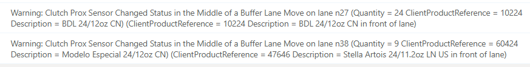
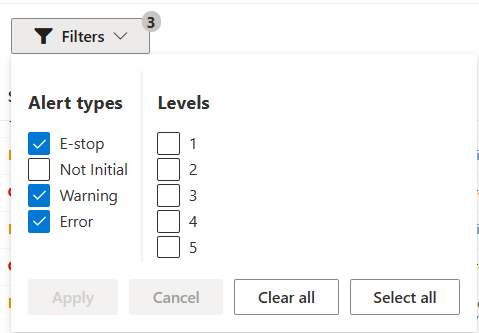
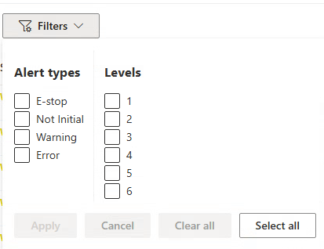

Alerts Page¶
Home > Main Screens > Alerts Page
Overview¶
The Alerts page provides a comprehensive view of current and historical alerts, with powerful search and filtering capabilities to help you identify and resolve issues quickly.

Accessing the Alerts Page¶
- Click the Alerts button in the left navigation menu
- Available from any screen in InnoPick Manager
Default Display¶
When the Alerts page first loads: - Only uncleared alerts are displayed by default - Alerts are shown in chronological order (most recent first)
Alerts Page Columns¶
The Alerts page displays detailed information about each alert:
Date¶
- The date and time when the alert first occurred
- Useful for tracking when issues began
Source¶
- Indicates which portion of the software generated the alert
- Examples: Motion Controller, PLC, Core Logic, Buffer Management
- Helps identify which system component detected the issue and what aspect of InnoPick is the problem
Severity¶
Alerts are categorized by severity level: 
- Warning: Minor alert that may not require immediate action
- System can often continue operating
- Should be monitored for patterns
-
No audible sound
-
Error: A standard Alert which stops the affected level and puts it into Manual (Faulted/Red) mode.
- Other levels continue operating
-
The panel Buzzer will sound to alert the operator
-
Critical: Major system alert requiring attention
- Production on all levels may be stopped
- Requires operator intervention
- The panel Buzzer will sound to alert the operator
Raw Code¶
- The numeric code associated with the alert
- Used to identify specific alert types
- Reference these codes in the Alert Reference Guide
- Examples: 119, 121, 515, 555, 709
Level¶
- The InnoPick level where the alert occurred
- May be blank for system-wide alerts
Message¶
- Descriptive text explaining the nature of the alert
- Written to help operators understand what happened
- May include specific details like lane numbers or photocell locations, as well as contextual information (nearby cases, replenishment details, etc).
- Examples:
 

Using Search and Filters¶

Searching Alerts¶
Use the search bar to find specific alerts by: - Alert code (e.g., "555") - Keywords in message text (e.g., "photocell", "clutch") - Level number - Date/time information
Common Filtering Strategies¶
To find all alerts for a specific level: - Sort by the Level column - All alerts for each level will be grouped together
To find recent critical alerts: - Filter by Severity = Critical - Sort by Date (most recent first)
To track a specific type of fault: - Search for the alert code or key message terms - Review the pattern and frequency
Viewing All Alerts¶
To see all alerts: - Remove all filters:  - This shows all alerts, including some Warnings and "Not Initial" alerts that are filtered out by default. - This can be useful when a level seems to be faulted but there is no obvious reason why.
Why View Historical Alerts?¶
- Identify patterns of recurring issues
- Verify that alerts were properly resolved
- Troubleshoot intermittent problems
- Document issues for maintenance review
Common Alert Codes¶
Here are some frequently encountered alerts (see Alert Reference for complete list):
119 - Photocell still blocked after dispensing¶
- Photocell for a lane remained blocked after dispense move completed
- Usually indicates a case issue (broken, wrong size, poorly positioned)
121 - Photocell above lane never detected case during storing move¶
- InnoPick tried to store a case but photocell was never blocked
- Usually means no case was present to store
123 - Photocell never detected case during dispense move¶
- Case expected but not detected during dispense
- Possible causes: missing case, inventory count error
310 - Clutch Fault¶
- Clutch assembly failed to engage properly after multiple attempts
- Usually requires mechanical inspection
515 - Unexpected case entering infeed¶
- Infeed photocell blocked when no case was expected
- Check upstream conveyor system
555 - E-Stop condition active¶
- Safety system engaged (E-Stop pressed or door open)
- Clear E-Stop condition, then clear alert to resume
709 - Photocell blocked (PLC I/O Check)¶
- Photocell unexpectedly blocked during routine monitoring
- Check for debris, damaged cases, or sensor malfunction
Working with Alerts¶
Understanding Alert Progression¶
Typical Alert Lifecycle: 1. Issue occurs (sensor detects problem) 2. Alert generated and logged 3. System puts affected level in Manual or Fault mode 4. Alert appears on Home Page and Alerts Page 5. Operator resolves underlying issue 6. Operator clears alert 7. System resumes operation
When to Clear Alerts¶
You should clear alerts only when: - The underlying physical issue has been resolved - Cases are in correct positions - Sensors are unblocked - Mechanical issues are fixed - Safety devices are reset
Do not clear alerts if: - The problem still exists - You're unsure what caused the alert - Physical conditions don't match expectations - Multiple related alerts are occurring
If Alerts Won't Clear¶
Some alerts cannot be cleared until specific conditions are met:
- Read the alert message carefully
- Check physical conditions
- Is a photocell still blocked?
- Is an E-Stop still pressed?
- Is a case in the wrong position?
- Resolve the root cause
- Try clearing again
- The Alert in question is being filtered (not visible).
- Consult troubleshooting guide if issue persists
See Alert Guidelines for detailed resolution procedures.
Alert Troubleshooting Strategy¶
For Single Alerts¶
If an alert occurs once: 1. Note the alert type and details 2. Resolve the issue 3. Clear the alert 4. Monitor to ensure it doesn't recur
For Repeated Alerts¶
If the same alert occurs multiple times: 1. There's likely an underlying problem that wasn't fully resolved 2. Check for: - Damaged cases causing repeated issues - Incorrect inventory quantities - Mechanical problems - Configuration issues 3. Resolve the root cause, not just the symptom 4. Document the issue for maintenance review
For Multiple Different Alerts¶
If multiple alert types occur in sequence: 1. They may be related - one issue causing cascading effects 2. Review the Alert Guidelines 3. Focus on resolving the earliest alert first 4. Verify physical conditions match the inventory graph 5. May indicate a larger system issue requiring maintenance
Best Practices¶
During Production¶
- Keep the Alerts page open in a second browser tab
- Check regularly for new alerts
- Address warnings before they become critical
- Document recurring issues
For Troubleshooting¶
- Use search to find similar past alerts
- Note the frequency and pattern
- Check if alerts correlate with specific products or lanes
- Share alert history with maintenance personnel
Related Topics¶
- Alert Reference Guide - Complete list of all alert codes
- Alert Guidelines - Step-by-step resolution procedures
- Home Page Alerts - Quick alert overview
- Troubleshooting - General problem-solving guidance
Navigation: ← Home Page | Next: Inventory Section →